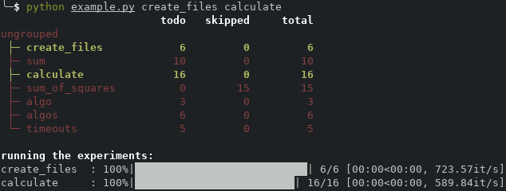
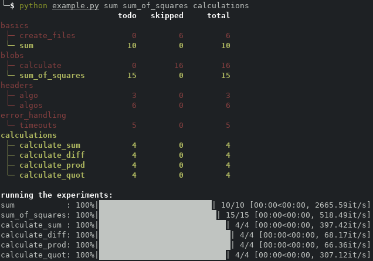

run
A module for running experiments that involve the execution of commands with different combinations of command line arguments.
Read on for an explanation with a bunch of examples, check out the reference documentation, or download the code.
Basic Concepts
Generate Argument Combinations. Instead of specifying all combinations of command line arguments for your experiment explicitly, you specify the sets of values for each argument. A set of runs with one run for each combination is generated automatically.
Everything is a Blob. At its core a blob is something that evaluates to a string based on the arguments of a single run. In most cases, a blob is simply a string that can contain wildcards for these arguments.
Skip Unnecessary Runs. Runs are skipped if the produced output file already exists. This is particularly helpful if the experiment setup evolves over time.
Postprocessing the Output. If the command prints its result to
stdout, you can specify how it should be saved to a file. This lets you, e.g., add some reformatting procedure or handle timeouts.
Usage
Your experiment script should look somewhat like this:
# example.py
import run
run.add(...)
run.add(...)
...
run.run()
The method run.add() has three mandatory parameters and multiple
keyword parameters. The first parameter specifies the name of the
experiment. This is used so you can select which experiments to run,
e.g., calling python example.py name1 name2 runs all experiments
where the name was name1 or name2 (experiments can also be
grouped). The second parameter
specifies the command that should be called and the third parameter is
a description of the arguments the command should be called with.
Their usage is explained in the next
section.
Generate Argument Combinations
Here is an easy example for an experiment that create some files by
calling the touch command.
run.add(
"create_files",
"touch output/a=[[a]]_b=[[b]]_c=[[c]].txt",
{'a': [1, 2], 'b': [1, 2, 3], 'c': 0}
)
The third parameter specifies the three arguments a, b, and
c. As a and b are lists, one run is created for each
combination of arguments. The second parameter specifies the command
for each run. It is a blob, i.e., the wildcard of the form [[a]]
is replaced with the corresponding value for a in each of the
runs. Thus, the above experiment calls touch six times creating
the following files.
$ ls output/
'a=1_b=1_c=0.txt' 'a=1_b=2_c=0.txt' 'a=1_b=3_c=0.txt'
'a=2_b=1_c=0.txt' 'a=2_b=2_c=0.txt' 'a=2_b=3_c=0.txt'
Note: In case your experiment involves some dependencies between the parameters that make some of the combinations invalid, you can filter those out.
Everything is a Blob
In the above example, the command (second parameter) is a blob, i.e., all wildcards are replaced with the appropriate values for each run. Besides being a string with wildcards, a blob can also be a function that returns a string with wildcards. In this case, it is called with the arguments of the current run as parameter, before the wildcards are replaced. See Blobs for more details.
Almost all parameters of run.add() are blobs and are thus evaluated
based on the arguments of each individual run. Even the arguments
themselves can be blobs based on earlier arguments. The next
section contains an example for this.
Moreover, there are some more details on blobs below.
Skip Unnecessary Runs
In the above example, run does not know that the runs create
files. Thus, the touch commands is called even if the files
already exist. You can use the optimal parameter creates_file to
explicitly state which file is created by a run. It is a blob, so in
the above example you could add
creats_file="output/a=[[a]]_b=[[b]]_c=[[c]].txt". Equivalently,
you can achieve the same in the following more elegant way, using that
the arguments themselves are blobs.
run.add(
"create_files",
"touch [[file]]",
{'a': [1, 2], 'b': [1, 2, 3], 'c': 0,
'file': "output/a=[[a]]_b=[[b]]_c=[[c]].txt"},
creates_file="[[file]]"
)
Now executing the script calls touch only for those files that do
not already exist. For more details on when exactly a run is skipped,
see Policy of Skipping Runs.
Note: Specifying creates_file is only necessary if the command
itself creates the file. If instead the command's output to stdout
is written to a file (see next section),
run already knows which file is created.
Postprocessing the Output
If the parameter stdout_file is provided, the command's output to
stdout is written to the corresponding file. This is illustrated
by the following example.
run.add(
"sum",
"echo $(([[a]] + [[b]]))",
{'a': [1, 2], 'b': [1, 2, 3]},
stdout_file="output/[[a]]+[[b]].txt"
)
The echo command itself adds the two given values and writes them
to standard output. The run module takes this result and writes it
to the provided file instead. Thus, executing this example creates
six files with different values for a and b, each of which contains
the sum of a and b as content.
You can postprocess stdout (given as string) by providing the
parameters stdout_mod (a function returning a blob) or
stdout_res (a blob). If both are provided, they are applied in
this order.
The function stdout_mod gets stdout as input its return value
replaces stdout. This can serve as some kind of parser that,
e.g., reformats the output from something human readable to csv.
Additionally, if the function takes two parameters, the second
parameter is the result of the call to
subprocess.run().
This can be useful to do a more sophisticated reformatting not only
based on stdout but also, e.g., on the return code or stderr.
If the blob stdout_res is given, this blob is written to the file
instead of stdout itself. This blob is somewhat special as it
allows for the additional argument stdout. The following example
uses stdout_res with the wildcard [[stdout]].
run.add(
"sum",
"echo $(([[a]] + [[b]]))",
{'a': [1, 2], 'b': [3, 4]},
stdout_file="output/sums.txt",
stdout_res="[[a]] + [[b]] = [[stdout]]"
)
This produces the following file.
$ cat output/sums.txt
2 + 3 = 5
2 + 4 = 6
1 + 3 = 4
1 + 4 = 5
Note that the output of the individual runs was appended to the file, i.e., the runs were not skipped. This is the intended behavior to support these kind of experiment setups; see Policy of Skipping Runs for more details on when exactly a run is skipped.
Note: There are several cases where stdout_mod and
stdout_res can both be used to achieve the same thing. You can
use this rule of thumb:
Use
stdout_modif you want to reformatstdoutor if you need access to things like the return code.Use
stdout_resif you want to combinestdoutwith the input arguments.Use both if you need both.
Note: When using stdout_file, one can additionally write a
header to the first line of the file.
Details
When you execute your experiment script, the following steps are performed in this order.
Generate Combinations. For each experiment, create the cross product of all argument lists provided in third parameter of
run.add(). For each argument combination that is not rejected bycombinations_filter, a single run is created. Each individual argument is a blob.Deblob. For each individual run, the blobs are turned into strings. This is first done for all arguments in the order they are given. Then all other blobs (except
stdout_res) are deblobbed.Skipping Runs. For each run, it is decided whether to skip the run. A run is skipped if the file it would produce (specified by
creates_fileorstdout_file) already exists at this stage in the process.Filter Unselected Runs. A run counts as selected if its experiments name or group was used as command line parameter to execute your experiment script. All other runs are ignored.
Run and Output Results. The runs are executed and, depending on the stdout settings and the header settings, the output is written.
Blobs
Deblobbing happens in three steps in the function run.deblob().
If the blob is a function, it is called with one parameter
args.argsis a dictionary mapping from the argument names to the value. Note that this is done after generating the combinations, i.e., the argument values are no longer lists.The result of step 1. (or the blob itself if it is not a function) is converted into a string. Thus, it is ok for an argument to have, e.g., integer values or for the above function to return integer values.
In the resulting string, each pattern of the form
[[key]]is replaced with the corresponding value inargs.
The following example is similar to one of the previous examples,
extending the computation of the sum to also compute differences,
products, and quotients. It gives an example of how to make use of
the fact that blobs can be functions. Note how the output file name
(stdout_file) of each run depends on the operator. As the
argument combinations are generated before deblobbing,
args['operator'] in the lambda function evaluates to one of the
operators (and not to the list of all operators). Running this,
creates the four files sum.txt, diff.txt, prod.txt, and
quot.txt, each containing the respective calculations.
res_name = {'+': "sum", '-': "diff", '*': "prod", '/': "quot"}
run.add(
"calculate",
"echo $(([[a]] [[operator]] [[b]]))",
{'a': [1, 2], 'b': [3, 4],
'operator': ["+", "-", "*", "/"]
},
stdout_file=lambda args: "output/" + res_name[args['operator']] + ".txt",
stdout_res="[[a]] [[operator]] [[b]] = [[stdout]]"
)
The next example highlights how the order of evaluation matters when
using blobs for the arguments. Assume we have three arguments a,
b, and c that depend on each other, i.e., we want to consider
not all but only certain combinations of values. In this example, we
want a, b, and c to be all combinations of natural numbers
with a + b + c = 4. In the example below, this is done using the
helper argument triple, which is a list of triples. Then the
actual arguments a, b, and c use these triples. Note that
blobs of a, b, and c are deblobbed (i.e., their lambda
functions are called) after lists have been split into separate runs
but before the triple argument was deblobbed. Thus,
args['triple'] is a dictionary of the form {'a': a, 'b': b, 'c':
c}. Moreover, a, b, and c are deblobbed before
file, which makes them usable as wildcards.
run.add(
"sum_of_squares",
"echo $(([[a]] * [[a]] + [[b]] * [[b]] + [[c]] * [[c]]))",
{'a': lambda args: args['triple']['a'],
'b': lambda args: args['triple']['b'],
'c': lambda args: args['triple']['c'],
'triple': [{'a': a, 'b': b, 'c': c}
for a in range(0, 5) for b in range(0, 5) for c in range(0, 5)
if a + b + c == 4],
'file': "output/sum_of_squares_[[a]]_[[b]]_[[c]].txt"
},
stdout_file="[[file]]"
)
Changing the order could have unwanted effects. Moving the argument
triple before a would first deblob triple, before calling
the lambda function, which means that args['triple'] would be the
string representation of the dictionary instead of the dictionary
itself. Moreover, having file before a would make the use of
'[[a]]' invalid, as the argument a would not be a string but a
function when trying to do the replacement.
As a rule of thumb: Arguments you use as wild cards should go before, arguments you want to use in their original form (not in their string representation) within a function should go after.
Note: In the above example one could of course remove the file
argument and directly assign its blob to stdout_file, as the
arguments are always deblobbed before any other blobs (like
stdout_file).
Filtering the Combinations
The previous example showed a somewhat hacky way of only looking at
those combinations of arguments a, b, and c where a +
b + c = 4. This can be achieved much easier using the parameter
combinations_filter. It is a function that gets called for every
argument combination and decides whether it is valid (in which case a
run is created) or not (in which case the combination is discarded).
run.add(
"better_sum_of_squares",
"echo $(([[a]] * [[a]] + [[b]] * [[b]] + [[c]] * [[c]]))",
{'a': list(range(0, 5)), 'b': list(range(0, 5)), 'c': list(range(0, 5))},
stdout_file="output/sum_of_squares_[[a]]_[[b]]_[[c]]_good.txt",
combinations_filter=lambda args: args['a'] + args['b'] + args['c'] == 4
)
Policy of Skipping Runs
From the order of steps discussed above, it becomes
implicitly clear that runs are only skipped if the result files
already exist at the time the script is executed. Thus, if two runs
have the same non-existent output file, they are both run, even if the
file exists when the second run starts. To make this more explicit,
here is the behavior of writing files when using the stdout_file
parameter.
If the file exists when adding the experiment via
run.add()(i.e., before running any experiment), then the run is skipped.If the run is not skipped but the file exists when executing the run,
stdoutis added at the end of the file.If the file does not exist, it is created beginning with the header (if specified) and then
stdoutis added.
Thus, instead of writing one file per run, one can also have multiple runs write their output into a single file. This can be the intended behavior if, e.g., the output of the same algorithm on multiple instances should appear in the same csv file. The disadvantage of this is that either all or none of the experiments creating this file are skipped, so extending the experiment would require to rerun it (which might be ok, depending on your use case).
Headers
When using stdout_file, one can use the parameter
header_string (a blob) to specify a header that should appear in
the first line of the file. Alternatively, one can specify
header_command (again, a blob), which is a command that is
executed and its output (to stdout) is used as header. The
resulting header can be modified by specifying the parameter
header_mod. It should be a function that takes the unmodified
header as input and outputs the actual (modified) header.
Using header_command instead of simply header_string is
advantageous in the following scenario. Assume you have an executable
called algo that runs a certain algorithm on an input file and
outputs some statistics using comma-separated values. Moreover,
assume algo is capable of printing the corresponding header by
calling algo --only-header. Then the following example first
writes the header (obtained by calling algo --only-header)
followed by the results of running algo on three input files.
run.add(
"algo",
"algo [[input]]",
{'input': ["file1", "file2", "file3"]},
stdout_file="output.csv",
header_command="algo --only-header"
)
The advantage of this is that the knowledge about the output of
algo is concentrated at the algo executable, i.e., the
experiment script does not have to change if the statistics printed by
algo change. Moreover, using header_command over
header_string becomes even more advantageous, when running
multiple commands, e.g., algo1 and algo2, with the same
command line interface (but potentially very different outputs) on the
same set of files. This is illustrated by the following example (note
the usage of the wildcard [[algo]] in the command (second
parameter) and the header_command).
run.add(
"algos",
"[[algo]] [[input]]",
{'algo': ["algo1", "algo2"],
'input': ["file1", "file2", "file3"]},
stdout_file="output_[[algo]].csv",
header_command="[[algo]] --only-header"
)
Error Handling
This section is only about errors that happen when executing a run. If you have an error in your experiment specification, then you probably just get a python error you have to deal with.
You can specify the allowed return codes of an experiment via the
parameter allowed_return_codes. The default is [0]. If the
return code of the command is not in the list of allowed return codes,
a warning is printed and the run is aborted, meaning that stdout
is not written to the file given by stdout_file. You can set
allowed_return_codes to [] to indicate that every return code
should be accepted (you probably should not do this).
In case different return codes are possible, you probably want to
postprocess the result by using stdout_mod or stdout_res.
With the former, you have access to the return code; with the latter
you only have the output of the command; see the section about
postprocessing the standard output.
In the following example, sleep [[time]] && echo waking up waits
for 0 to 4 seconds and then outputs waking up. The command
timeout 2 aborts this after 2 seconds and returns with code
124 and no output to stdout. The return codes 0 and
124 are allowed by setting allowed_return_codes=[0, 124].
Moreover, the blob stdout_res specifies the output depending on
whether there was a timeout.
run.add(
"timeouts",
"timeout 2 sleep [[time]] && echo waking up",
{'time': [0, 1, 2, 3, 4]},
stdout_file="output/timeouts.txt",
allowed_return_codes=[0, 124],
stdout_res=lambda args: (
"sleeping [[time]]s -> [[stdout]]" if args['stdout'] != "" else
"sleeping [[time]]s -> timeout")
)
This produces the following file.
$ cat output/timeouts.txt
sleeping 0s -> waking up
sleeping 1s -> waking up
sleeping 3s -> timeout
sleeping 4s -> timeout
sleeping 2s -> timeout
The above example relies on the fact that the standard output is the
empty string in case of an error. The following yields the same
result but explicitly checks for the return code using stdout_mod
instead of stdout_res.
run.add(
"timeouts",
"timeout 2 sleep [[time]] && echo waking up",
{"time": [0, 1, 2, 3, 4]},
stdout_file="output/timeouts.txt",
allowed_return_codes=[0, 124],
stdout_mod=lambda out, res: (
"sleeping [[time]]s -> [[stdout]]"
if res.returncode == 0
else "sleeping [[time]]s -> timeout"
),
)
In the above example, one could also use the parameter out
directly instead of using the wildcard [[stdout]].
Miscellaneous Features
There are some features that are not at the core of run in the sense
that they are independent of how you specify your experiments.
Nonetheless they are pretty useful and should be mentioned here.
Experiment Names and Groups
When running the experiment script with all examples from above by
calling python example.py create_files calculate, the output looks
somewhat like this:

You can see that a bunch of experiments are available. The two
selected ones are highlighted in green (here create_files and
calculate), all others are red.
To select which experiments to run more conveniently, you can group
experiments using the run.group() function as follows.
# example.py
import run
run.group("group_name_a")
run.add("exp1", ...)
run.add("exp2", ...)
...
run.group("group_name_b")
run.add("exp3", ...)
run.add("exp4", ...)
...
run.run()
By running the script with a group name as parameter, all experiments
in that group are run, e.g., python example.py group_name_a runs
the experiments "exp1" and "exp2".
Experiment names are of course also blobs, so you can do the following
to create experiments with four different names in one group by
calling run.add() just once.
res_name = {'+': "sum", '-': "diff", '*': "prod", '/': "quot"}
run.group("calculations")
run.add(
"calculate_[[op_name]]",
"echo $(([[a]] [[operator]] [[b]]))",
{'a': [1, 2], 'b': [3, 4],
'operator': ["+", "-", "*", "/"],
'op_name': lambda args: res_name[args['operator']]
},
stdout_file="output/result_[[op_name]].txt",1
stdout_res="[[a]] [[operator]] [[b]] = [[stdout]]"
)
Adding some more groups and calling python example.py sum
sum_of_squares calculations yields the following output.

Parallelization
Runs from the same experiment are run in parallel and you can choose
how many threads to use by calling run.use_cores(nr_cores). By
default, 4 cores are used.
Note: There is no parallelization between different experiments,
i.e., in the above example, all runs from sum have to finish
before the runs of sum_of_squares start.
Note: Files are locked for writing, i.e., it is ok for multiple
runs of the same experiment to write to the same file. It is also
made sure that the header is written only once. If you abort an
experiment by interrupting it with ctrl + c there might be a
leftover *.lock file, which you have to remove manually.
Dry Run
If you execute your experiment script with dry_run as parameter,
the runs are not executed. Instead it is printed to stdout which
runs would have been called.
Creating Directories
If you use stdout_file and the directory where the output file
should be stored does not exist, it is created.
Multiple Runs in One Script
You can call run.run() multiple times in one script. Each call
after the first considers only the runs added after the previous call.
This is useful when there are some experiments that create files and
then later experiments do something for each file created earlier.
This is demonstrated in the following example, where create_files
creates some .txt files while copy_files copies all .txt
files that are found by
glob.glob("output/*.txt").
run.add(
"create_files",
"touch [[file]]",
{"a": [1, 2], "b": [1, 2, 3], "c": 0, "file": "output/a=[[a]]_b=[[b]]_c=[[c]].txt"},
creates_file="[[file]]",
)
run.run()
import glob
files = glob.glob("output/*.txt")
run.add(
"copy_files",
"cp [[file]] [[copy]]",
{"file": files, "copy": "[[file]].copy"},
creates_file="[[copy]]",
)
run.run()
Without the first call to run.run(),
glob.glob()
would not find the files created by create_file as they are not
yet created. Thus, one would have to call the script twice to do both
experiments. With the additional call to run.run(), one can run
create_files and copy_files in one execution of the script.
Section Headlines
You can call run.section() to print a section title (e.g., to
structure the output in case of multiple run calls).
Interface Documentation
View Source
''' A module for running experiments that involve the execution of commands with different combinations of command line arguments. Read on for an explanation with a bunch of examples, check out the [reference documentation](./run.html), or download the [code](https://github.com/thobl/run). # Basic Concepts 1. **Generate Argument Combinations.** Instead of specifying all combinations of command line arguments for your experiment explicitly, you specify the sets of values for each argument. A set of runs with one run for each combination is generated automatically. 1. **Everything is a Blob.** At its core a blob is something that evaluates to a string based on the arguments of a single run. In most cases, a blob is simply a string that can contain wildcards for these arguments. 1. **Skip Unnecessary Runs.** Runs are skipped if the produced output file already exists. This is particularly helpful if the experiment setup evolves over time. 1. **Postprocessing the Output.** If the command prints its result to ``stdout``, you can specify how it should be saved to a file. This lets you, e.g., add some reformatting procedure or handle timeouts. # Usage Your experiment script should look somewhat like this: ```python # example.py import run run.add(...) run.add(...) ... run.run() ``` The method ``run.add()`` has three mandatory parameters and multiple keyword parameters. The first parameter specifies the name of the experiment. This is used so you can select which experiments to run, e.g., calling ``python example.py name1 name2`` runs all experiments where the name was ``name1`` or ``name2`` (experiments can also be [grouped](#experiment-names-and-groups)). The second parameter specifies the command that should be called and the third parameter is a description of the arguments the command should be called with. Their usage is explained in the [next section](#generate-argument-combinations). ## Generate Argument Combinations Here is an easy example for an experiment that create some files by calling the ``touch`` command. ```python run.add( "create_files", "touch output/a=[[a]]_b=[[b]]_c=[[c]].txt", {'a': [1, 2], 'b': [1, 2, 3], 'c': 0} ) ``` The third parameter specifies the three arguments ``a``, ``b``, and ``c``. As ``a`` and ``b`` are lists, one run is created for each combination of arguments. The second parameter specifies the command for each run. It is a blob, i.e., the wildcard of the form ``[[a]]`` is replaced with the corresponding value for ``a`` in each of the runs. Thus, the above experiment calls ``touch`` six times creating the following files. ```shell $ ls output/ 'a=1_b=1_c=0.txt' 'a=1_b=2_c=0.txt' 'a=1_b=3_c=0.txt' 'a=2_b=1_c=0.txt' 'a=2_b=2_c=0.txt' 'a=2_b=3_c=0.txt' ``` **Note:** In case your experiment involves some dependencies between the parameters that make some of the combinations invalid, you can [filter those out](#filtering-the-combinations). ## Everything is a Blob In the above example, the command (second parameter) is a blob, i.e., all wildcards are replaced with the appropriate values for each run. Besides being a string with wildcards, a blob can also be a function that returns a string with wildcards. In this case, it is called with the arguments of the current run as parameter, before the wildcards are replaced. See [Blobs](#blobs) for more details. Almost all parameters of `run.add()` are blobs and are thus evaluated based on the arguments of each individual run. Even the arguments themselves can be blobs based on earlier arguments. The [next section](#skip-unnecessary-runs) contains an example for this. Moreover, there are some more details on blobs [below](#blobs). ## Skip Unnecessary Runs In the above example, ``run`` does not know that the runs create files. Thus, the ``touch`` commands is called even if the files already exist. You can use the optimal parameter ``creates_file`` to explicitly state which file is created by a run. It is a blob, so in the above example you could add ``creats_file="output/a=[[a]]_b=[[b]]_c=[[c]].txt"``. Equivalently, you can achieve the same in the following more elegant way, using that the arguments themselves are blobs. ```python run.add( "create_files", "touch [[file]]", {'a': [1, 2], 'b': [1, 2, 3], 'c': 0, 'file': "output/a=[[a]]_b=[[b]]_c=[[c]].txt"}, creates_file="[[file]]" ) ``` Now executing the script calls ``touch`` only for those files that do not already exist. For more details on when exactly a run is skipped, see [Policy of Skipping Runs](#policy-of-skipping-runs). **Note:** Specifying ``creates_file`` is only necessary if the command itself creates the file. If instead the command's output to ``stdout`` is written to a file (see [next section](#postprocessing-the-output)), ``run`` already knows which file is created. ## Postprocessing the Output If the parameter ``stdout_file`` is provided, the command's output to ``stdout`` is written to the corresponding file. This is illustrated by the following example. ```python run.add( "sum", "echo $(([[a]] + [[b]]))", {'a': [1, 2], 'b': [1, 2, 3]}, stdout_file="output/[[a]]+[[b]].txt" ) ``` The ``echo`` command itself adds the two given values and writes them to standard output. The run module takes this result and writes it to the provided file instead. Thus, executing this example creates six files with different values for a and b, each of which contains the sum of a and b as content. You can postprocess ``stdout`` (given as string) by providing the parameters ``stdout_mod`` (a function returning a blob) or ``stdout_res`` (a blob). If both are provided, they are applied in this order. The function ``stdout_mod`` gets ``stdout`` as input its return value replaces ``stdout``. This can serve as some kind of parser that, e.g., reformats the output from something human readable to csv. Additionally, if the function takes two parameters, the second parameter is the result of the call to [``subprocess.run()``](https://docs.python.org/3/library/subprocess.html#subprocess.run). This can be useful to do a more sophisticated reformatting not only based on ``stdout`` but also, e.g., on the return code or stderr. If the blob ``stdout_res`` is given, this blob is written to the file instead of ``stdout`` itself. This blob is somewhat special as it allows for the additional argument ``stdout``. The following example uses ``stdout_res`` with the wildcard ``[[stdout]]``. ```python run.add( "sum", "echo $(([[a]] + [[b]]))", {'a': [1, 2], 'b': [3, 4]}, stdout_file="output/sums.txt", stdout_res="[[a]] + [[b]] = [[stdout]]" ) ``` This produces the following file. ``` shell $ cat output/sums.txt 2 + 3 = 5 2 + 4 = 6 1 + 3 = 4 1 + 4 = 5 ``` Note that the output of the individual runs was appended to the file, i.e., the runs were not skipped. This is the intended behavior to support these kind of experiment setups; see [Policy of Skipping Runs](#policy-of-skipping-runs) for more details on when exactly a run is skipped. **Note:** There are several cases where ``stdout_mod`` and ``stdout_res`` can both be used to achieve the same thing. You can use this rule of thumb: * Use ``stdout_mod`` if you want to reformat ``stdout`` or if you need access to things like the return code. * Use ``stdout_res`` if you want to combine ``stdout`` with the input arguments. * Use both if you need both. **Note:** When using ``stdout_file``, one can additionally [write a header](#headers) to the first line of the file. # Details When you execute your experiment script, the following steps are performed in this order. 1. **Generate Combinations.** For each experiment, create the cross product of all argument lists provided in third parameter of ``run.add()``. For each argument combination that is not rejected by [``combinations_filter``](#filtering-the-combinations), a single run is created. Each individual argument is a blob. 1. **Deblob.** For each individual run, the [blobs are turned into strings](#blobs). This is first done for all arguments in the order they are given. Then all other blobs (except ``stdout_res``) are deblobbed. 1. **Skipping Runs.** For each run, it is decided whether to skip the run. A run is skipped if the file it would produce (specified by ``creates_file`` or ``stdout_file``) already exists at this stage in the process. 1. **Filter Unselected Runs.** A run counts as selected if its experiments [name or group](#experiment-names-and-groups) was used as command line parameter to execute your experiment script. All other runs are ignored. 1. **Run and Output Results.** The runs are executed and, depending on the [stdout settings](#postprocessing-the-output) and the [header settings](#headers), the output is written. ## Blobs Deblobbing happens in three steps in the function ``run.deblob()``. 1. If the blob is a function, it is called with one parameter ``args``. ``args`` is a dictionary mapping from the argument names to the value. Note that this is done after generating the combinations, i.e., the argument values are no longer lists. 1. The result of step 1. (or the blob itself if it is not a function) is converted into a string. Thus, it is ok for an argument to have, e.g., integer values or for the above function to return integer values. 1. In the resulting string, each pattern of the form ``[[key]]`` is replaced with the corresponding value in ``args``. The following example is similar to one of the previous examples, extending the computation of the sum to also compute differences, products, and quotients. It gives an example of how to make use of the fact that blobs can be functions. Note how the output file name (``stdout_file``) of each run depends on the operator. As the argument combinations are generated before deblobbing, ``args['operator']`` in the lambda function evaluates to one of the operators (and not to the list of all operators). Running this, creates the four files ``sum.txt``, ``diff.txt``, ``prod.txt``, and ``quot.txt``, each containing the respective calculations. ```python res_name = {'+': "sum", '-': "diff", '*': "prod", '/': "quot"} run.add( "calculate", "echo $(([[a]] [[operator]] [[b]]))", {'a': [1, 2], 'b': [3, 4], 'operator': ["+", "-", "*", "/"] }, stdout_file=lambda args: "output/" + res_name[args['operator']] + ".txt", stdout_res="[[a]] [[operator]] [[b]] = [[stdout]]" ) ``` The next example highlights how the order of evaluation matters when using blobs for the arguments. Assume we have three arguments ``a``, ``b``, and ``c`` that depend on each other, i.e., we want to consider not all but only certain combinations of values. In this example, we want ``a``, ``b``, and ``c`` to be all combinations of natural numbers with ``a + b + c = 4``. In the example below, this is done using the helper argument ``triple``, which is a list of triples. Then the actual arguments ``a``, ``b``, and ``c`` use these triples. Note that blobs of ``a``, ``b``, and ``c`` are deblobbed (i.e., their lambda functions are called) after lists have been split into separate runs but before the ``triple`` argument was deblobbed. Thus, ``args['triple']`` is a dictionary of the form ``{'a': a, 'b': b, 'c': c}``. Moreover, ``a``, ``b``, and ``c`` are deblobbed before ``file``, which makes them usable as wildcards. ```python run.add( "sum_of_squares", "echo $(([[a]] * [[a]] + [[b]] * [[b]] + [[c]] * [[c]]))", {'a': lambda args: args['triple']['a'], 'b': lambda args: args['triple']['b'], 'c': lambda args: args['triple']['c'], 'triple': [{'a': a, 'b': b, 'c': c} for a in range(0, 5) for b in range(0, 5) for c in range(0, 5) if a + b + c == 4], 'file': "output/sum_of_squares_[[a]]_[[b]]_[[c]].txt" }, stdout_file="[[file]]" ) ``` Changing the order could have unwanted effects. Moving the argument ``triple`` before ``a`` would first deblob ``triple``, before calling the lambda function, which means that ``args['triple']`` would be the string representation of the dictionary instead of the dictionary itself. Moreover, having ``file`` before ``a`` would make the use of ``'[[a]]'`` invalid, as the argument ``a`` would not be a string but a function when trying to do the replacement. As a rule of thumb: Arguments you use as wild cards should go before, arguments you want to use in their original form (not in their string representation) within a function should go after. **Note:** In the above example one could of course remove the ``file`` argument and directly assign its blob to ``stdout_file``, as the arguments are always deblobbed before any other blobs (like ``stdout_file``). ## Filtering the Combinations The previous example showed a somewhat hacky way of only looking at those combinations of arguments ``a``, ``b``, and ``c`` where ``a + b + c = 4``. This can be achieved much easier using the parameter ``combinations_filter``. It is a function that gets called for every argument combination and decides whether it is valid (in which case a run is created) or not (in which case the combination is discarded). ```python run.add( "better_sum_of_squares", "echo $(([[a]] * [[a]] + [[b]] * [[b]] + [[c]] * [[c]]))", {'a': list(range(0, 5)), 'b': list(range(0, 5)), 'c': list(range(0, 5))}, stdout_file="output/sum_of_squares_[[a]]_[[b]]_[[c]]_good.txt", combinations_filter=lambda args: args['a'] + args['b'] + args['c'] == 4 ) ``` ## Policy of Skipping Runs From the [order of steps](#details) discussed above, it becomes implicitly clear that runs are only skipped if the result files already exist at the time the script is executed. Thus, if two runs have the same non-existent output file, they are both run, even if the file exists when the second run starts. To make this more explicit, here is the behavior of writing files when using the ``stdout_file`` parameter. 1. If the file exists when adding the experiment via ``run.add()`` (i.e., before running any experiment), then the run is skipped. 1. If the run is not skipped but the file exists when executing the run, ``stdout`` is added at the end of the file. 1. If the file does not exist, it is created beginning with the [header](#headers) (if specified) and then ``stdout`` is added. Thus, instead of writing one file per run, one can also have multiple runs write their output into a single file. This can be the intended behavior if, e.g., the output of the same algorithm on multiple instances should appear in the same csv file. The disadvantage of this is that either all or none of the experiments creating this file are skipped, so extending the experiment would require to rerun it (which might be ok, depending on your use case). ## Headers When using ``stdout_file``, one can use the parameter ``header_string`` (a blob) to specify a header that should appear in the first line of the file. Alternatively, one can specify ``header_command`` (again, a blob), which is a command that is executed and its output (to ``stdout``) is used as header. The resulting header can be modified by specifying the parameter ``header_mod``. It should be a function that takes the unmodified header as input and outputs the actual (modified) header. Using ``header_command`` instead of simply ``header_string`` is advantageous in the following scenario. Assume you have an executable called ``algo`` that runs a certain algorithm on an input file and outputs some statistics using comma-separated values. Moreover, assume ``algo`` is capable of printing the corresponding header by calling ``algo --only-header``. Then the following example first writes the header (obtained by calling ``algo --only-header``) followed by the results of running ``algo`` on three input files. ```python run.add( "algo", "algo [[input]]", {'input': ["file1", "file2", "file3"]}, stdout_file="output.csv", header_command="algo --only-header" ) ``` The advantage of this is that the knowledge about the output of ``algo`` is concentrated at the ``algo`` executable, i.e., the experiment script does not have to change if the statistics printed by ``algo`` change. Moreover, using ``header_command`` over ``header_string`` becomes even more advantageous, when running multiple commands, e.g., ``algo1`` and ``algo2``, with the same command line interface (but potentially very different outputs) on the same set of files. This is illustrated by the following example (note the usage of the wildcard ``[[algo]]`` in the command (second parameter) and the ``header_command``). ```python run.add( "algos", "[[algo]] [[input]]", {'algo': ["algo1", "algo2"], 'input': ["file1", "file2", "file3"]}, stdout_file="output_[[algo]].csv", header_command="[[algo]] --only-header" ) ``` ## Error Handling This section is only about errors that happen when executing a run. If you have an error in your experiment specification, then you probably just get a python error you have to deal with. You can specify the allowed return codes of an experiment via the parameter ``allowed_return_codes``. The default is ``[0]``. If the return code of the command is not in the list of allowed return codes, a warning is printed and the run is aborted, meaning that ``stdout`` is **not** written to the file given by ``stdout_file``. You can set ``allowed_return_codes`` to ``[]`` to indicate that every return code should be accepted (you probably should not do this). In case different return codes are possible, you probably want to postprocess the result by using ``stdout_mod`` or ``stdout_res``. With the former, you have access to the return code; with the latter you only have the output of the command; see the section about [postprocessing the standard output](#postprocessing-the-output). In the following example, ``sleep [[time]] && echo waking up`` waits for 0 to 4 seconds and then outputs ``waking up``. The command ``timeout 2`` aborts this after 2 seconds and returns with code ``124`` and no output to ``stdout``. The return codes ``0`` and ``124`` are allowed by setting ``allowed_return_codes=[0, 124]``. Moreover, the blob ``stdout_res`` specifies the output depending on whether there was a timeout. ```python run.add( "timeouts", "timeout 2 sleep [[time]] && echo waking up", {'time': [0, 1, 2, 3, 4]}, stdout_file="output/timeouts.txt", allowed_return_codes=[0, 124], stdout_res=lambda args: ( "sleeping [[time]]s -> [[stdout]]" if args['stdout'] != "" else "sleeping [[time]]s -> timeout") ) ``` This produces the following file. ```shell $ cat output/timeouts.txt sleeping 0s -> waking up sleeping 1s -> waking up sleeping 3s -> timeout sleeping 4s -> timeout sleeping 2s -> timeout ``` The above example relies on the fact that the standard output is the empty string in case of an error. The following yields the same result but explicitly checks for the return code using ``stdout_mod`` instead of ``stdout_res``. ```python run.add( "timeouts", "timeout 2 sleep [[time]] && echo waking up", {"time": [0, 1, 2, 3, 4]}, stdout_file="output/timeouts.txt", allowed_return_codes=[0, 124], stdout_mod=lambda out, res: ( "sleeping [[time]]s -> [[stdout]]" if res.returncode == 0 else "sleeping [[time]]s -> timeout" ), ) ``` In the above example, one could also use the parameter ``out`` directly instead of using the wildcard ``[[stdout]]``. # Miscellaneous Features There are some features that are not at the core of `run` in the sense that they are independent of how you specify your experiments. Nonetheless they are pretty useful and should be mentioned here. ## Experiment Names and Groups When running the experiment script with all examples from above by calling ``python example.py create_files calculate``, the output looks somewhat like this:  You can see that a bunch of experiments are available. The two selected ones are highlighted in green (here ``create_files `` and ``calculate``), all others are red. To select which experiments to run more conveniently, you can group experiments using the ``run.group()`` function as follows. ```python # example.py import run run.group("group_name_a") run.add("exp1", ...) run.add("exp2", ...) ... run.group("group_name_b") run.add("exp3", ...) run.add("exp4", ...) ... run.run() ``` By running the script with a group name as parameter, all experiments in that group are run, e.g., ``python example.py group_name_a`` runs the experiments "exp1" and "exp2". Experiment names are of course also blobs, so you can do the following to create experiments with four different names in one group by calling ``run.add()`` just once. ```python res_name = {'+': "sum", '-': "diff", '*': "prod", '/': "quot"} run.group("calculations") run.add( "calculate_[[op_name]]", "echo $(([[a]] [[operator]] [[b]]))", {'a': [1, 2], 'b': [3, 4], 'operator': ["+", "-", "*", "/"], 'op_name': lambda args: res_name[args['operator']] }, stdout_file="output/result_[[op_name]].txt",1 stdout_res="[[a]] [[operator]] [[b]] = [[stdout]]" ) ``` Adding some more groups and calling ``python example.py sum sum_of_squares calculations`` yields the following output.  ## Parallelization Runs from the same experiment are run in parallel and you can choose how many threads to use by calling ``run.use_cores(nr_cores)``. By default, ``4`` cores are used. **Note:** There is no parallelization between different experiments, i.e., in the above example, all runs from ``sum`` have to finish before the runs of ``sum_of_squares`` start. **Note:** Files are locked for writing, i.e., it is ok for multiple runs of the same experiment to write to the same file. It is also made sure that the header is written only once. If you abort an experiment by interrupting it with ``ctrl + c`` there might be a leftover ``*.lock`` file, which you have to remove manually. ## Dry Run If you execute your experiment script with ``dry_run`` as parameter, the runs are not executed. Instead it is printed to ``stdout`` which runs would have been called. ## Creating Directories If you use ``stdout_file`` and the directory where the output file should be stored does not exist, it is created. ## Multiple Runs in One Script You can call ``run.run()`` multiple times in one script. Each call after the first considers only the runs added after the previous call. This is useful when there are some experiments that create files and then later experiments do something for each file created earlier. This is demonstrated in the following example, where ``create_files`` creates some ``.txt`` files while ``copy_files`` copies all ``.txt`` files that are found by [``glob.glob("output/*.txt")``](https://docs.python.org/3/library/glob.html#glob.glob). ```python run.add( "create_files", "touch [[file]]", {"a": [1, 2], "b": [1, 2, 3], "c": 0, "file": "output/a=[[a]]_b=[[b]]_c=[[c]].txt"}, creates_file="[[file]]", ) run.run() import glob files = glob.glob("output/*.txt") run.add( "copy_files", "cp [[file]] [[copy]]", {"file": files, "copy": "[[file]].copy"}, creates_file="[[copy]]", ) run.run() ``` Without the first call to ``run.run()``, [``glob.glob()``](https://docs.python.org/3/library/glob.html#glob.glob) would not find the files created by ``create_file`` as they are not yet created. Thus, one would have to call the script twice to do both experiments. With the additional call to ``run.run()``, one can run ``create_files`` and ``copy_files`` in one execution of the script. ## Section Headlines You can call ``run.section()`` to print a section title (e.g., to structure the output in case of multiple run calls). # [Interface Documentation](./run.html) '''